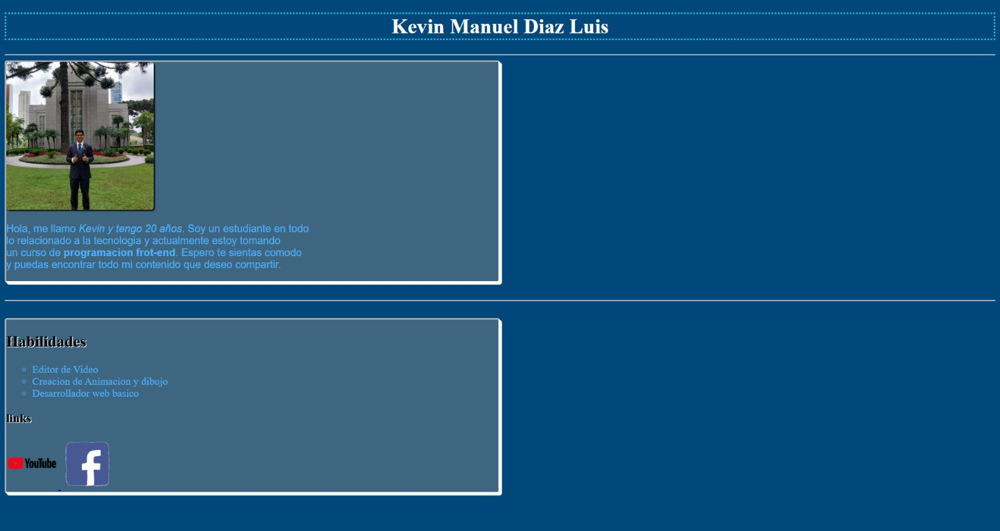
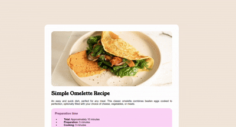
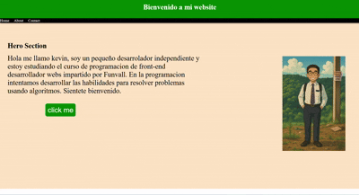
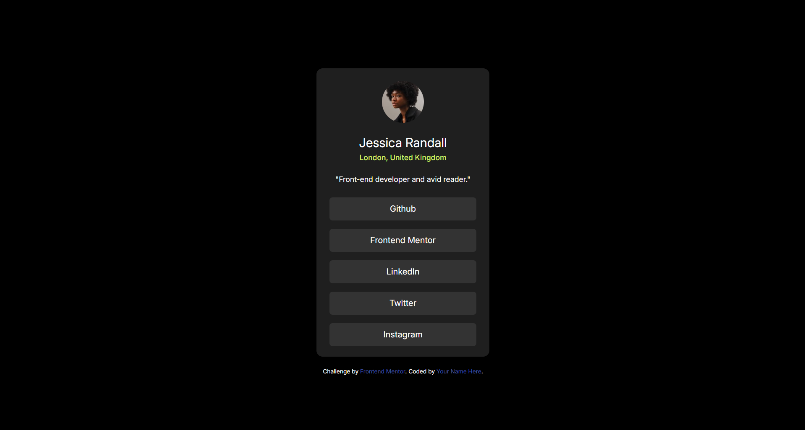

Inicio
Github
Kevin Manuel Diaz Luis
Practicas y proyectos
Practica 1
Pagina web simple

Practica 2
recipe-page-main

Practica 3
recipe-page-main

Pagina de Perfil
recipe-page-main

Calculadora hecha en JVS
recipe-page-main
Practica 7
Usamos metodos de transformacion en JV